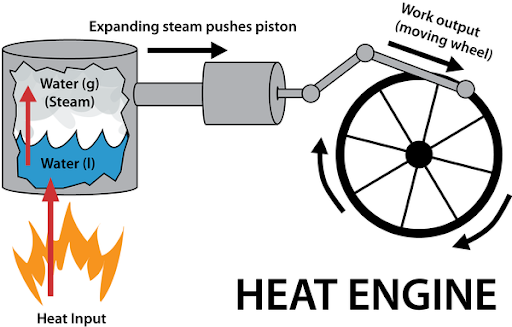
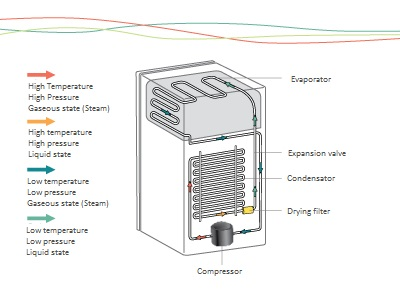

The laws of thermodynamics describe how energy moves and changes in the universe. These principles set the foundation for understanding physical processes such as heat transfer, energy conversion, and the operation of engines and refrigerators. In this report, we will examine the core concepts and principles behind heat engines, internal-combustion engines, refrigerators, the second law of thermodynamics, and entropy.
Heat engines are devices that convert thermal energy into mechanical work by exploiting the temperature difference between a hot reservoir and a cold reservoir. The basic principle is that heat flows naturally from hot to cold, and a heat engine harnesses a portion of this flow to perform work (such as moving a piston or turning a turbine).
The First Law of Thermodynamics (law of energy conservation) is honored as energy is neither created nor destroyed—just transferred and transformed.
The Second Law of Thermodynamics is illustrated because not all input heat can become work; some energy must be expelled as waste heat.
Efficiency of a heat engine:
η = W / Qin
or, equivalently:
η = 1 - (Qout / Qin)
The diagram below shows a simplified model of a typical heat engine operating between two thermal reservoirs. This model is a foundational concept in thermodynamics and can be found in many physics textbooks, such as Serway & Jewett, and in the CK-12 and Physics.info references.
Here’s how the process works, step by step:
This diagram helps visualize the key functions and constraints of all heat engines, making it easier to understand why both the first and second laws of thermodynamics govern their operation, and how the efficiency formulas arise from the energy flows within the system.
Internal-combustion engines are a specific type of heat engine in which the combustion of fuel occurs inside the working chamber (such as a cylinder). The rapid burning of fuel produces high-pressure gases, which push against pistons or turn turbines, directly converting chemical energy into mechanical work.
Internal-combustion engines follow the First Law of Thermodynamics as chemical (fuel) energy is transformed into work and heat.
The Second Law of Thermodynamics appears as not all fuel energy is converted to work—some is always lost as heat and exhaust.
Refrigerators are devices that use work to transfer heat from a low-temperature area (inside the fridge) to a high-temperature area (outside the fridge). This process is essentially the reverse of a heat engine. Instead of converting heat to work, refrigerators use work (usually provided by an electric compressor) to move heat against its natural direction.
According to the First Law of Thermodynamics, the total energy is conserved (work input plus heat taken from the cold area equals heat expelled to the warm area).
The Second Law of Thermodynamics explains why refrigerators need external work: heat doesn’t spontaneously flow from cold to hot.
General COP:
COP = Qcold / W
COP for a perfect (Carnot) refrigerator:
COPCarnot = Tcold / (Thot - Tcold)
The diagram below shows how a refrigerator keeps food and drinks cold by moving heat from inside the fridge to the outside. The process works in a closed loop and involves four main parts: the evaporator, expansion valve, condenser, and compressor.
Here’s how each step works:
The colored arrows and labels in the diagram help you follow the flow and state of the refrigerant through each stage—showing whether it is a gas or liquid, and whether it is hot or cold. By constantly cycling the refrigerant through these steps, the refrigerator is able to take heat from inside the fridge and move it outside, keeping your food cold and fresh.
To understand the ultimate limits of a refrigerator’s performance, we consider the Carnot cycle and its reverse.
In the refrigerator diagram above, the flow of the refrigerant and the direction of heat transfer represent the practical implementation of the reversed Carnot cycle. While real refrigerators are less efficient than a Carnot refrigerator due to friction, non-ideal materials, and other losses, the Carnot cycle sets the theoretical upper limit for efficiency and performance.
In summary, the reversed Carnot cycle helps us understand how refrigerators can ideally transfer heat from cold to hot, and why their efficiency always depends on the temperature difference between the inside and outside of the refrigerator.
The Second Law of Thermodynamics states that the total entropy of an isolated system can never decrease over time; it can only increase or remain constant. This law explains why certain processes occur spontaneously (such as heat flowing from hot to cold) and why energy conversions are never 100% efficient.
Entropy is a measure of disorder or randomness in a system. As energy becomes more evenly distributed, entropy increases. The Third Law of Thermodynamics states that as the temperature of a perfect crystal approaches absolute zero (0 Kelvin), its entropy approaches zero.